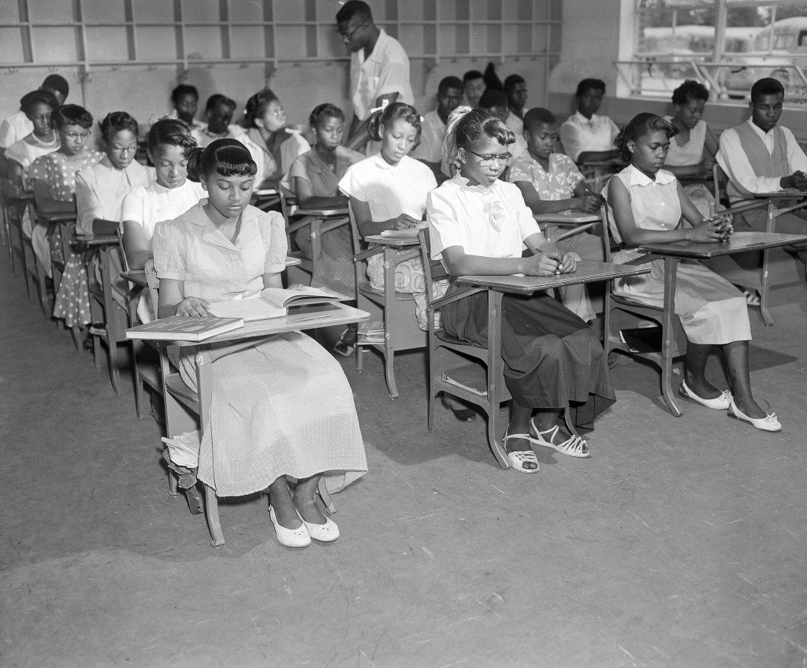

Black Teachers
After the passing of Brown v Board of Education of Topeka and the backlash that followed, concerns about the type of education that Black students would be receiving began to arise. Although the Brown decision was made in Topeka, and the country began to see changes in some schools like Central High School in Little Rock, many cities were still in the pre-Brown state of public education. In the midwest, predominantly Black schools were prevalent and were increasing in quantity. It's been noted that racial segregation in schools was not an issue until around 1964, nearly ten years after the Brown decision. This revelation seems odd because there surely was an amount of civil rights leaders and Black teachers who could've spoken out against racial segregation, but for nine years after a historic case did not. This has a lot to do with early civil rights activism and the history of difficulties of Black employment.
Students in class at a predominantly black school (1954)
Black Milwaukee activists were involved in the hiring process for Black teachers. They steadily pressured school officials to hire college educated Black teachers to improve education and provide guidance to Black students. Black teachers were rarely hired, in fact before the 1930s, there wasn't a single Black teacher employed by Milwaukee public schools despite the rising Black population in the state. It was so difficult for Black people to be hired as teachers that even Black college graduates came to a realization that the only work available to them was low paying, and labor based even though they obtained their degree. During this time, employment was especially tough for women, who were limited to domestic work. This is depicted in Toni Morrison's, The Bluest Eye.
The character, Mrs Pauline Breedlove is a housekeeper and has been one since she was around the age 15. She continues this profession when she moves from Kentucky to Ohio, working for a white woman. This character embodies the average black woman during this era, showing the reality of options for employment. An eye opening scene in this novel is when Mrs Breedlove attempts to negotiate with her employer to keep her job. This comes shortly after her husband, Mr Cholly Breedlove pays her an unwarranted visit and frightens the white woman. Because of this, she gives Mrs Breedlove an ultimatum, keep her job and leave Cholly or stay with him and get fired. This puts Mrs Breedlove in a difficult position because not only did she need her job to survive, it also would've been difficult to find another job due to employment options being limited for Black women during this era.
It was common for administrators to reject qualified Black applicants due to predjudices and the assumption that many of them were migrants who came up North in search of jobs. There were several occurences of Black teachers being hired but the action was merely used as an example. During a 1932 Milwaukee election, two Black teachers were hired for the substitute teaching role at an elementary school. Teaching as substitutes was common for teachers awaiting full time positions. The candidate who was responsible for the hiring of the two women later won the election. Shortly after his win, one of the two women hired was fired from her substitute teaching position while the other one was demoted from a full time to a part time substitute.